SE_02 – Algorithms and Data Structures
Table of contents
1. Introduction
This document is meant to illustrate how various algorithms work and the data structures that these make use of. Starting from a theoretical refresh on some important mathematical concepts (widely used in the science of analyzing algorithms), I’m going to use these concepts to analyze how complex various data structures and algorithms are. I’m also going to go over pros and cons on each and every one of them, giving an idea on which use cases suit them best.
Needless to say, this document requires basic understanding of programming (going to demonstrate concepts with Python in some cases) and a basic mathematical knowledge.
2. Algorithms Analysis Theory
In this section, I’m going to give an overview on the practices used to analyze algorithms. It’s imprecise to just measure how much time or space an algorithms requires to run to determine its complexity. That would just give an information on how much resources the algorithm takes to execute on one specific machine, but doesn’t really give unbiased information on what’s the amount of resources required on a worse or even better machine. That is why, while analyzing algorithms, we use specific notation that allows for clearer understanding of the complexity of an algorithm.
2.1. Complexities
There are two types of complexities to take into consideration when designing an algorithm:
Both complexities can be expressed using Asymptotic Notation, which is going to be covered in depth in the next chapter. In this document, I’m going to be – almost – solely focus on the concept of time complexity.
2.2. Asymptotic Bounds
Any given algorithm takes an n amount of steps to complete. As stated before, we can’t just measure the time a step takes to complete as that wouldn’t give us a realistic complexity representation. That is why, to express the complexity of an algorithm we make use of a concept called Asymptotic Notation, which allows for a machine-independent measurement.
The notation makes use of the concept of Asymptotic Bound which is, by definition, a curve representing the limit of a function where the distance between the function and the curve tends to zero.
When analyzing an algorithms, we’re interested in three types of bounds (each with its own notation).
2.2.1. Asymptotic Upper Bound – \(Big\mbox{-}O\)
The upper bound, which can also be referred to as \(Big\mbox{-}O\) or just \(O\) represents the worst-case scenario in the running time of an algorithm. Let’s say \(f(n)\) describes the running time of an algorithm; we can then say that \(f(n)\) is \(O(g(n))\) if and only if a constant \(c\) exists such that \(c \cdot g(n) \geq f(n)\) for all \(n \geq n_0\).
In mathematical terms, we can then define \(Big\mbox{-}O\) as follows:
\(f(n) = O(g(n)) \iff c \cdot g(n) \geq f(n) \;\; \forall \;\; n \geq n_0 \)
More than often, there is more than one function that is suitable as \(Big\mbox{-}O\) for one algorithm, but we’re interested in the tightest (closer) upper bounding function among them, since it gives us a more realistic idea of the worst-case running time of a function.
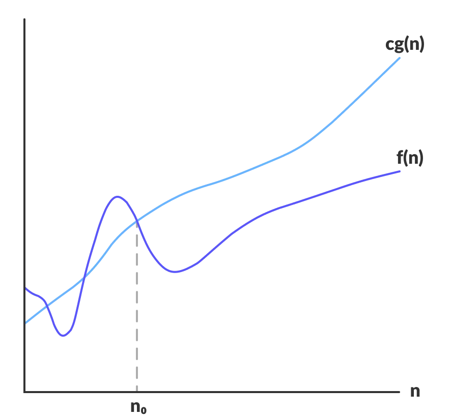
fig. 1 – from Programiz
2.2.2. Asymptotic Lower Bound – \(Big\mbox{-}\Omega\)
The lower bound, which can also be referred to as \(Big\mbox{-}\Omega\) or just \(\Omega\) represents the best-case scenario in the running time of an algorithm. Let’s say \(f(n)\) describes the running time of an algorithm; we can then say that \(f(n)\) is \(\Omega(g(n))\) if and only if a constant \(c\) exists such that \(c \cdot g(n) \leq f(n)\) for all \(n \geq n_0\).
In mathematical terms, we can then define \(Big\mbox{-}\Omega\) as follows:
\(f(n) = \Omega(g(n)) \iff c \cdot g(n) \leq f(n) \;\; \forall \;\; n \geq n_0 \)
Again, there is usually more than one function that is suitable as \(Big\mbox{-}\Omega\) for one algorithm, but we’re interested in the tightest (closer) lower bounding function among them, since it gives us a more realistic idea of the best-case running time of a function.
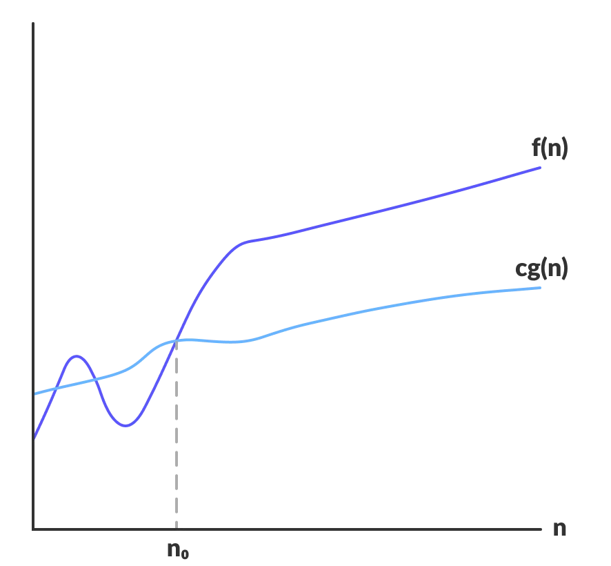
fig. 2 – from Programiz
2.2.3. Asymptotic Tight Bound – \(Big\mbox{-}\Theta\)
The tight bound, which can also be referred to as \(Big\mbox{-}\Theta\) or just \(\Theta\) represents the average-case scenario in the running time of an algorithm. Let’s say \(f(n)\) describes the running time of an algorithm; we can then say that \(f(n)\) is \(\Theta(g(n))\) if and only if two constants \(c_1, c_2\) exist such that \(c_1 \cdot g(n) \leq f(n) \leq c_2 \cdot g(n)\) for all \(n \geq n_0\).
In mathematical terms, we can then define \(Big\mbox{-}\Theta\) as follows:
\(f(n) = \Theta(g(n)) \iff c_1 \cdot g(n) \leq f(n) \) \( \leq c_2 \cdot g(n) \;\; \forall \;\; n \geq n_0\)
Naively, the asymptotic tight bound is a function which, when multiplied by two different constants, manages to “sandwich” \(f(n)\).
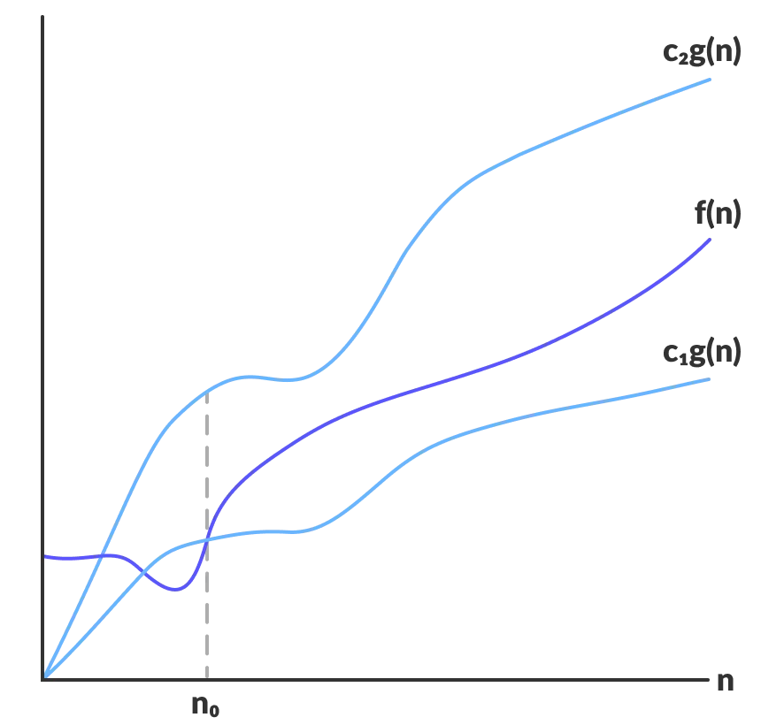
fig. 3 – from Programiz
2.2.4. Considerations about Bounds
Later in this document, I’m going to to analyze various trivial and non-trivial algorithms using a technique called operation-count method which involves counting the number of primitive operations in an algorithm and summing them all together. The result usually consists of many constants other than the input size \(n\).
Since for \(n \rightarrow \infty\) constants are much less dominant than \(n\), we approximate bounding functions to general classes of functions, some of them are shown in fig. 4.
The general order of dominance of these function is as follows:
\(1 \ll \log(n) \ll n \ll n\log(n) \ll n^2 \ll 2^n \ll n!\)
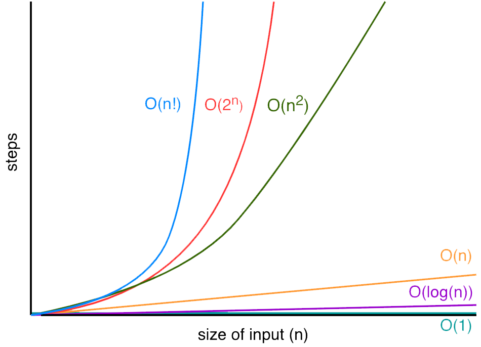
fig. 4
3. Analysis of Data Structures
Data structures are the foundation of most algorithms. They provide a way to store, organize and retrieve data, and each of them has different functionalities, advantages and disadvantages. Knowing how common data structures work and how complex it is to do various operations on them is extremely important for algorithm design – thus I'm going to cover them before the Algorithm Analysis section.
Data structures can be classified in primitive and non-primitive structures:
3.1. Array
Arrays are contiguous data structures, meaning that the data they hold is located in contiguous memory locations. This makes accessing the elements in the array efficient, since each one of them is assigned an index (fig.5). Two dimensional arrays (fig. 6) can be used to represent matrixes in code by having an array which has other arrays as its elements.
Arrays have different properties depending on the programming language implementation. In C, for example, arrays have a fixed size and only allow elements of one data type. In Javascript instead, their size is dynamic (their size doubles every time they're full) and the developer is allowed to store whatever type they prefer into them.
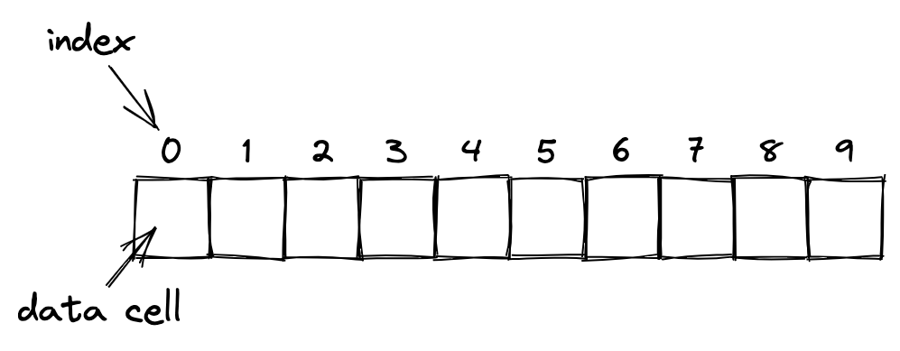
fig. 5 – Array
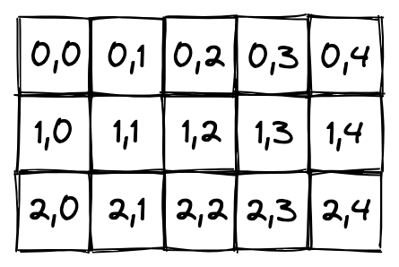
fig. 6 – 2D Array
Arrays are an extremely common data structure, and other structures, that we're going to look into later are based on them.
Space complexity-wise, they're extremely efficient since they contain only data at every index.
| Input size = \(n\) | Time complexity | Why? |
|---|---|---|
| Access | \(O(1)\) | Thanks to arrays indexing, accessing an element happens in constant time. |
| Search | \(O(n)\) | Linear search for an element requires traversing the whole array in the worst case. |
| Insert | \(O(n)\) | Insertion of an element requires, in the worst case, shifting all other elements of the array by one. |
| Delete | \(O(n)\) | Deletion of an element requires, in the worst case, shifting all other elements of the array by one. |
| Update | \(O(1)\) | Updating an element requires access – \(O(1)\) – and then updating the accessed value. |
3.2. Linked List
Linked Lists are non-linear data structures which means that, even though they're a collection of data, they don't store it in contiguous memory locations. They instead make use of pointers to keep track of every element in the list, which are themselves stored as part of each element.
The first element of the list is the "HEAD" of the list, and that's the only element that the structure itself needs to keep a reference of, since all subsequent elements are keeping references of each other.
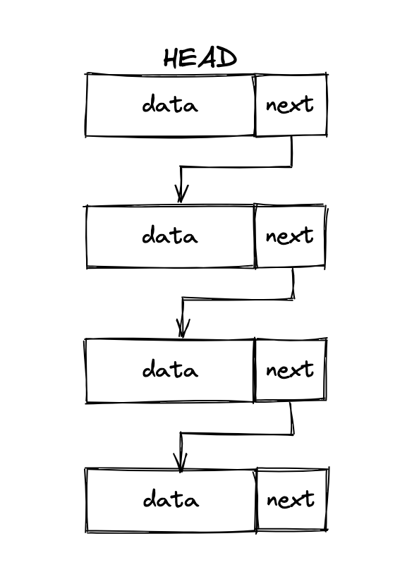
fig. 7 – Singly linked list
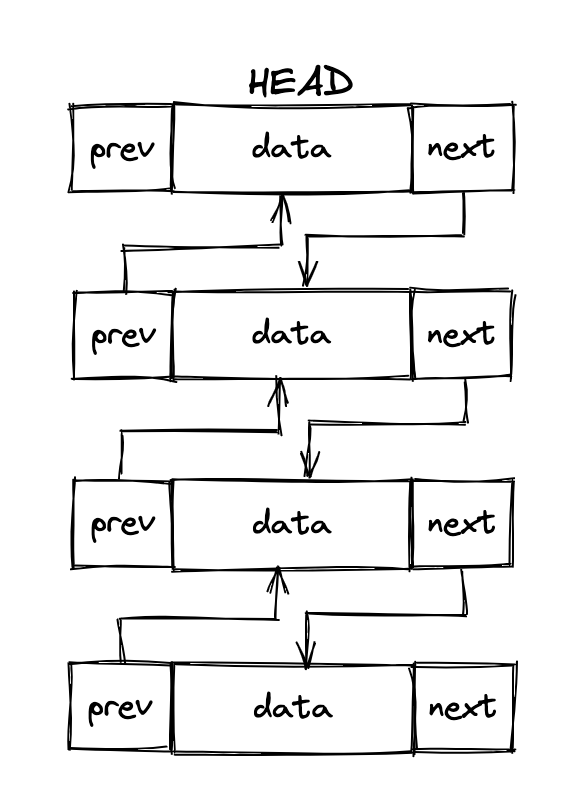
fig. 8 – Doubly linked list
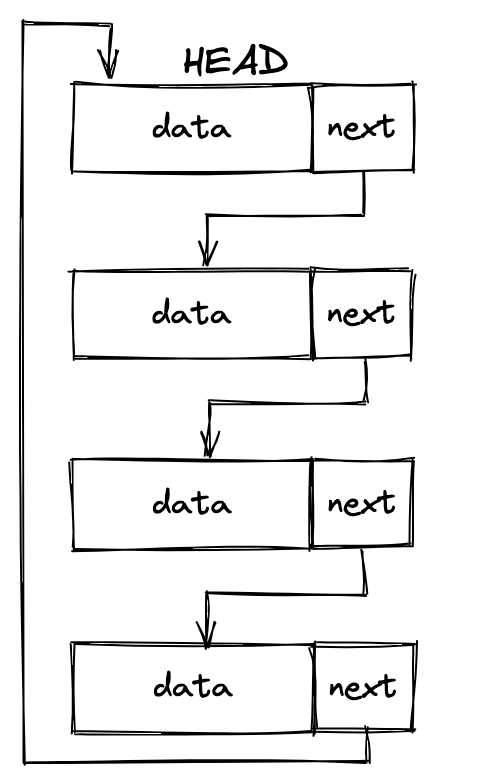
fig. 9 – Circular singly linked list
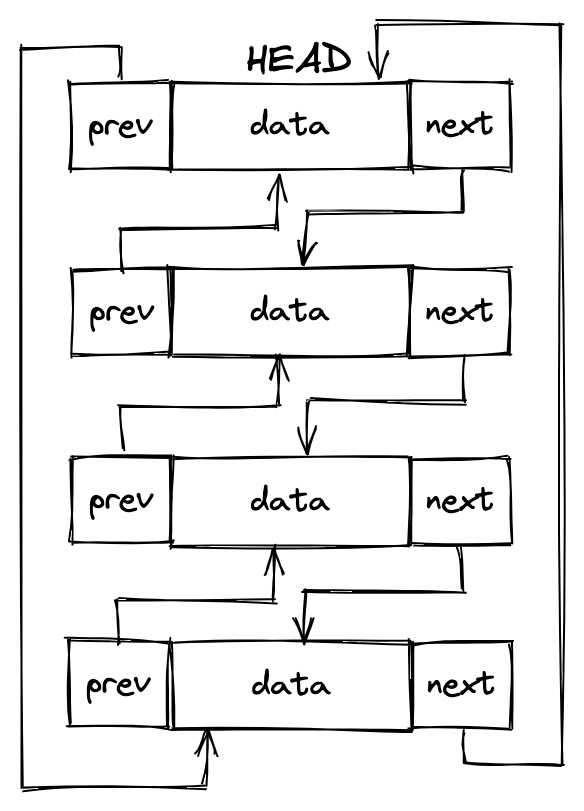
fig. 10 – Circular doubly linked list
Depending on the use case, there is a couple ways to structure a linked list to best suit the needs of the developer:
C++ implementation of singly Linked List
Space complexity wise linked lists are obviously not better than arrays – since every node stores one or two pointers other than the actual data. Often however, the advantage of having a dinamically sized collection of elements outweighs the space disadvantages.
In the table below, for the Insert, Delete, and Update operation complexities, I'm taking into consideration the sole operation, without taking into account that each one of them requires first of all accessing the node, with a complexity of \(O(n)\).
| Input size = \(n\) | Time complexity | Why? |
|---|---|---|
| Access | \(O(n)\) | Linked list doesn't offer direct access to a node, so we have to traverse it every time. |
| Search | \(O(n)\) | Searching for an element still runs into the problem of having to traverse the whole list in the worst case. |
| Insert | \(O(1)\) | Insertion of an element just requires setting, in the worse case, two pointers. There is no node shifting. |
| Delete | \(O(1)\) | Deletion of an element just requires setting, in the worse case, two pointers. There is no node shifting. |
| Update | \(O(1)\) | Updating an element requires constant time after accessing the said element. |
3.3. Stack
A stack can be visualized like a pile of heavy books. I can add one more book to it, I can take one book from it, but I can't take the books which are lower in the pile until I relieve them of the weight on them. In computer science, this principle is called L.I.F.O. (Last In, First Out).
Stacks can be implemented using either an array or a linked list and, in general, the best advantage of implementing stacks with the latter data structure is their dynamic size. There's no other big difference between the implementations since the stack only needs to keep a reference of the top element.
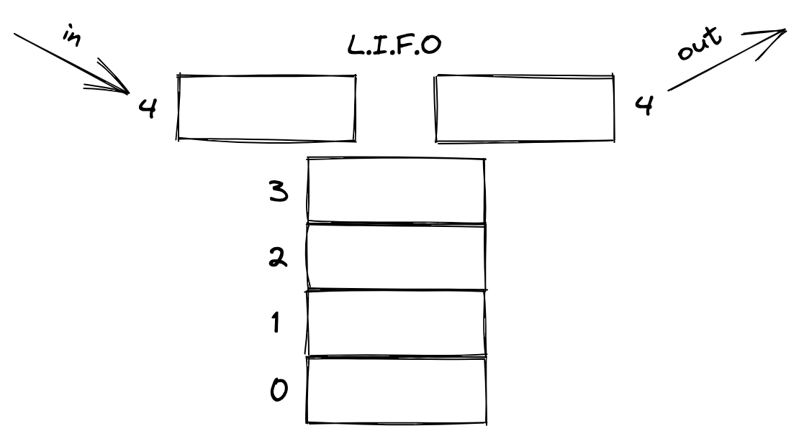
fig. 11 – Stack
Stacks have many applications in every day programming, some of them are the following:
In general, stacks are useful when the programmer either doesn't care about the order on which they process the data contained in the stack, or when they care about processing the data in reverse order.
The complexity table below analyzes a stack implemented with a linked list.
C++ implementation of Stack
| Input size = \(n\) | Time complexity | Why? |
|---|---|---|
| Push | \(O(1)\) | To push an element on top of the stack, we just have to reference the element two times. |
| Pop | \(O(1)\) | Removing and returning an element is just a matter of changing the top reference to the next element. |
| Peek | \(O(1)\) | Only involves accessing the top element without changing references. |
3.4. Queue
A queue can be visualized like a line of people waiting for their turn at the post office. More people can join the queue by standing at the end of the line, but they'll have to wait for their turn because the post office only serves the person in front of the line, one at a time. In computer science, this principle is called F.I.F.O. (First In, First Out).
Queues can be implemented using either an array or a linked list and, in general, the latter implementation's best advantage is its dynamic size. In addition to that, the linked list implementation doesn't run into the problem of running out of space after consecutive successful dequeues – something that gets addressed in array implementations using circular queues.
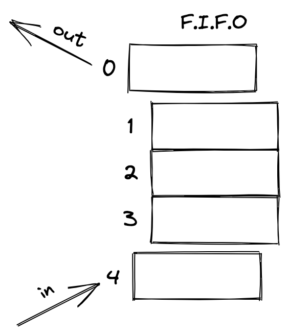
fig. 12 – Queue
Queues can also be implemented to dequeue elements based on priority instead of the F.I.F.O. principle. These are usually implemented with heaps for their efficiency and elements can be associated with a priority while being pushed in the queue. The priority queue will then dequeue elements based on highest priority first.
C++ implementation of Queue
| Input size = \(n\) | Time complexity | Why? |
|---|---|---|
| Enqueue | \(O(1)\) | To enqueue an element at the end of the queue, we just have to reference the element as rear. |
| Dequeue | \(O(1)\) | Removing and returning an element is done by setting the front of the queue to the next element and returning the element. |
| Peek | \(O(1)\) | Only involves accessing the front element without changing references. |
3.5. Graph
Graphs are a non-linear data structure which consists of vertices and edges connecting them. They're the base of other data structures like trees and heaps. Graphs can be used to model real life relationships between entities of any type. For example, an undirected graph can be used to represent friendships in a social network, or a weighted directed graph could represent a road network. They're generally not space efficient and time complexity of operations depends on the way they're implemented. Mathematically, a graph is represented with the notation:
Where \(V\) is a set of vertices and \(E\) a set of edges. Every edge is an ordered pair of vertices.
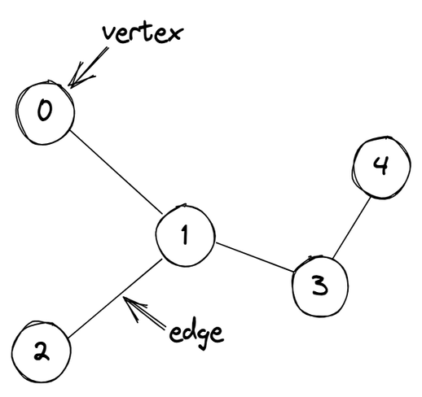
fig. 13 - Graph
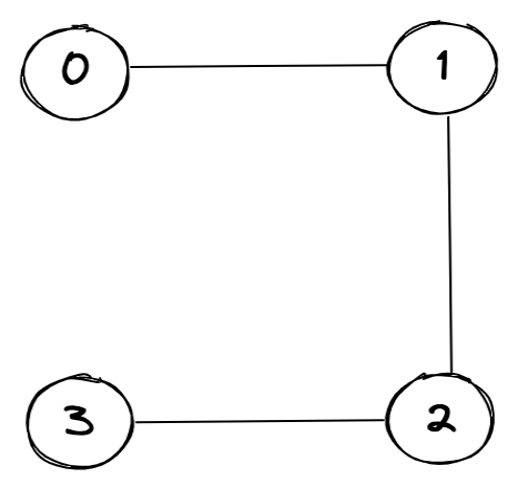
fig. 14 - Acyclycal graph
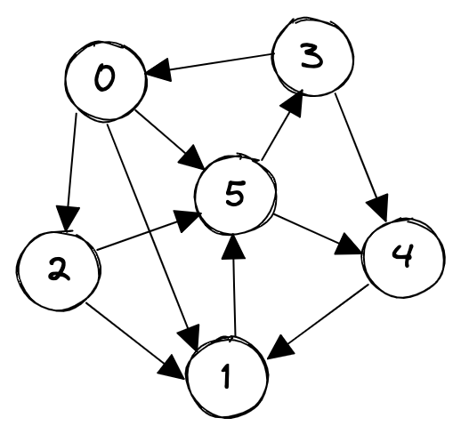
fig. 15 - Directed graph
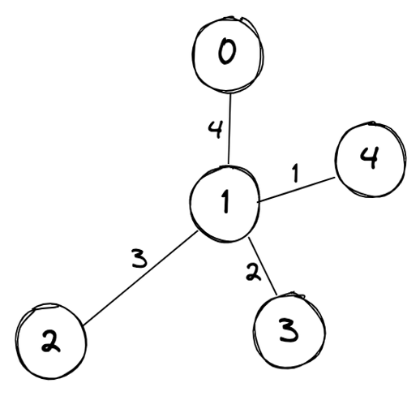
fig. 16 - Weighted graph
They can be represented in two ways:
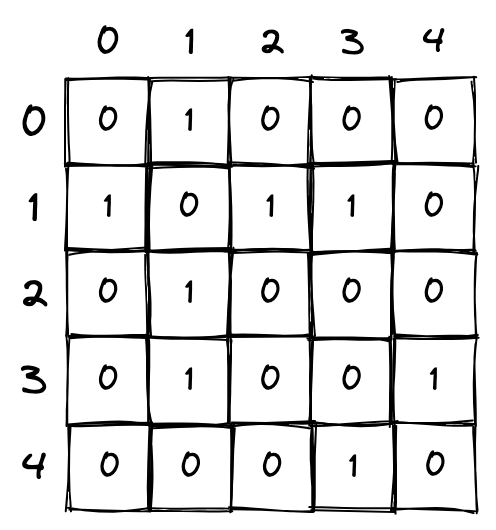
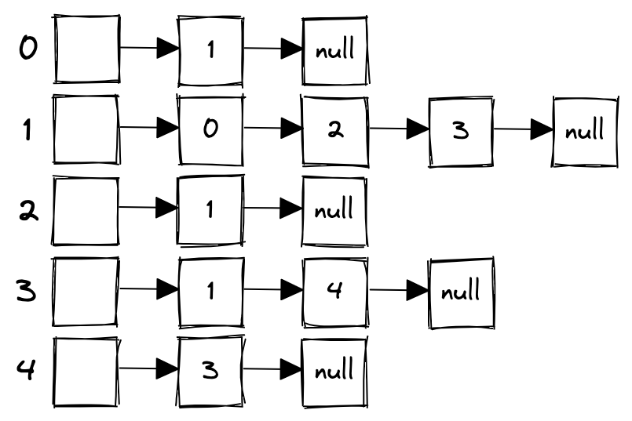
Graphs have various adjectives, based on the properties they have. Here's a few of them:
Graphs stored with adjacency matrices have a space complexity of \(O(|V|^2)\), and the time complexity of the implementation is described in the table below. Since \(V\) and \(E\) are sets, the "\(|\)" symbol is needed to imply cardinality.
| Vertices = \(V\) Edges = \(E\) |
Time complexity | Why? |
|---|---|---|
| Add vertex | \(O(|V|^2)\) | Arrays have a fixed size, and by adding a vertex we have to copy the whole matrix over. |
| Add edge | \(O(1)\) | To add an edge between two existing vertices, we just need to access (\(O(1)\)) and change \(0\) to \(1\). |
| Remove vertex | \(O(|V|^2)\) | In the worst case, all columns in the matrix have to be shifted down by one, before removing one column and one row. |
| Remove edge | \(O(1)\) | To remove an edge between two existing vertices, we just need to access (\(O(1)\)) and change \(1\) to \(0\). |
Graphs stored with adjacency lists have a space complexity of \(O(|V|+|E|)\). The time complexity of the implementation is described in the table below.
| Vertices = \(V\) Edges = \(E\) |
Time complexity | Why? |
|---|---|---|
| Add vertex | \(O(|V|)\) | Arrays have a fixed size, and by adding a vertex we have to copy the whole array over. |
| Add edge | \(O(1)\) | To add an edge between two existing vertices, we just need to access (\(O(1)\)) and add the edge to the list accordingly. |
| Remove vertex | \(O(|V|+|E|)\) | To remove a vertex we might have to iterate over every vertex, and then over every vertice's edge. |
| Remove edge | \(O(1)\) | To remove an edge between two existing vertices, we just need to access (\(O(1)\)) and remove the edge from the list accordingly. |
3.6. Tree
Trees are non-linear data structures that consist of nodes and edges. Every node consists of data and pointers to other nodes. The top node is also called root node and has no parent node. A node is a leaf or external node when it doesn't point to any other node – they're usually located towards the bottom of the tree if the tree is balanced. Edges are basically the connections between nodes, and there is a maximum of \(n - 1\) edges in a tree that has \(n\) nodes.
Since trees can be implemented in many different ways, there are some properties that describe them. I'll take into consideration fig. 17 while defining them:
As stated before, there are many ways of implementing a tree. In a Skewed binary tree for example, every node has only either a left or right child node, which leads to a structure that is more similar to a linked list.
This document is going to cover only trees of degree \(2\).
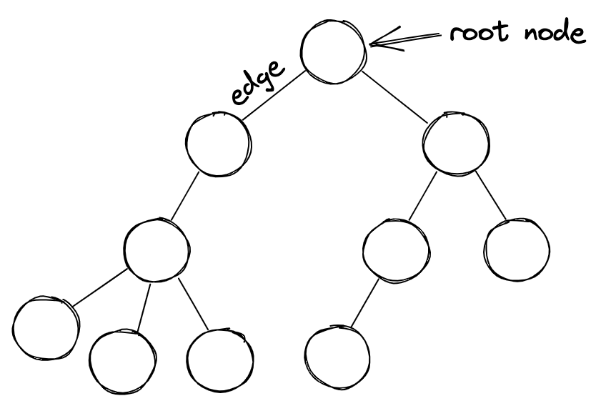
fig. 17 – Degree 3 tree
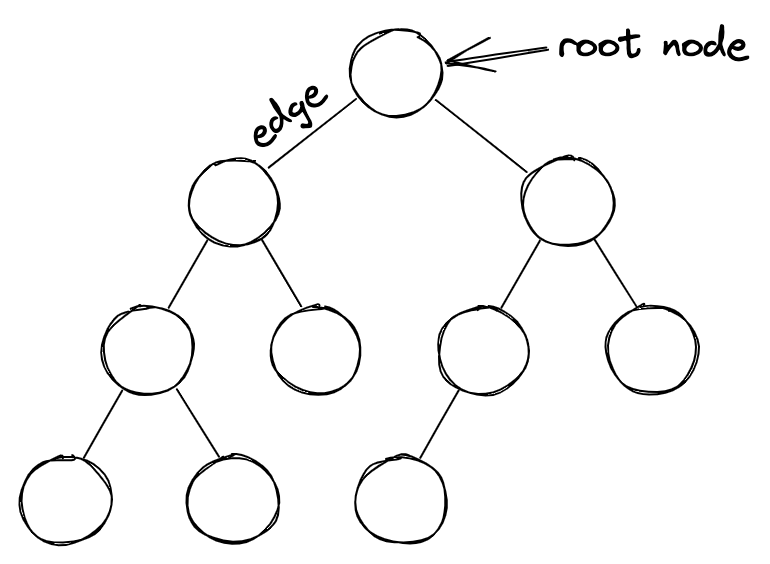
fig. 18 – Binary tree
3.6.1. Binary Search Tree
A binary search tree is a particular type of binary tree where:
Binary search trees search complexity is dependant on how balanced the tree is. In the case of a perfect binary tree (fig.19), \(h = \log(n)\), where \(h\) is the height of the tree and \(n\) is the total number of nodes in the tree.
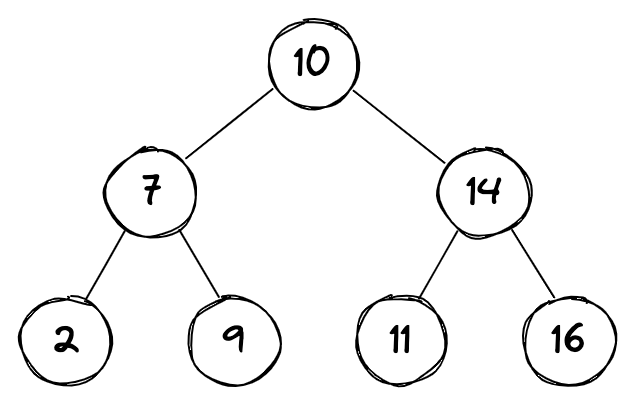
fig. 19 – Perfect Binary Search Tree
| N. of nodes = \(n\) Height = \(h\) |
Time complexity | Why? |
|---|---|---|
| Search | \(O(h) \approx O(\log(n))\) | In a perfect binary tree, every time a child node is accessed the search space is halved. |
| Insert (Leaf Node) | \(O(1)\) | It only involves setting a pointer on the parent node. |
| Delete (Leaf Node) | \(O(1)\) | Only involves removing a pointer from the parent node. |
| Insert (Internal Node) | \(O(n)\) | In the worst case, the operation can affect every node in the tree. |
| Delete (Internal Node) | \(O(n)\) | In the worst case, the operation can affect every node in the tree. |
Reality is trees can become unbalanced extremely quick while inserting and deleting nodes, leading to a search complexity of \(O(n)\). That is why computer scientists came up with the concept of self-balancing trees.
3.6.2. Red-Black Binary Tree
Red-black binary trees add a new "color" property to their nodes, which can be either red or black. They implement some more rules on the nodes behaviour based on their color:
By implementing these rules, the tree balances itself when inserting or removing nodes.
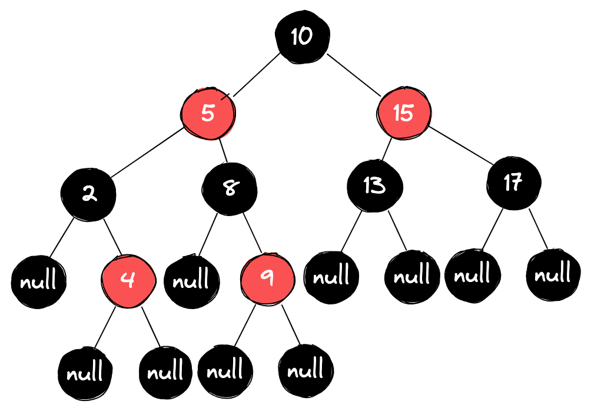
fig. 20 - Red-Black Binary Tree
3.6.3. AVL Binary Tree
An AVL tree (named after its inventors – Adelson-Velsky,Landis) is a self-balancing tree that restores balance if needed after every insertion or deletion. It does that by checking that the height of every node's subtrees does not exceed a threshold, which is usually \(1\). In mathematical terms, an AVL tree has to satisfy \(|B(N)| \leq 1\) for every given node \(N\), where \(B(N) = h_l - h_r\) with \(h_l, h_r\) being the height of the left and right child subtrees respectively.
When \(B(N) > 1\), the tree is left-heavy, and requires either a right rotation or a left-right rotation.
When \(B(N) < -1\), the tree is right-heavy, and requires either a left rotation or a right-left rotation.
More on rotations in fig. 21.
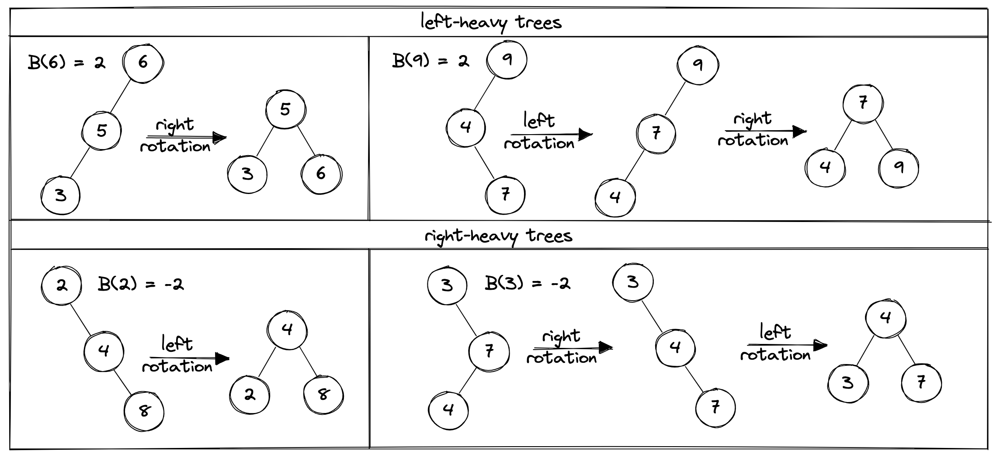
fig. 21 - AVL tree rotations
3.7. Heap
Heaps are data structures that are commonly used in Heap Sort and to implement Priority queues. They can be implemented in two different ways:
Heaps are complete trees. That means that a heap with \(n\) nodes always has a \(O(\log(n))\) height. In an array implementation:
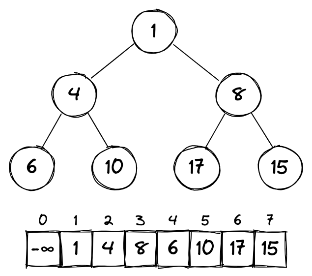
fig. 22 - Min Heap
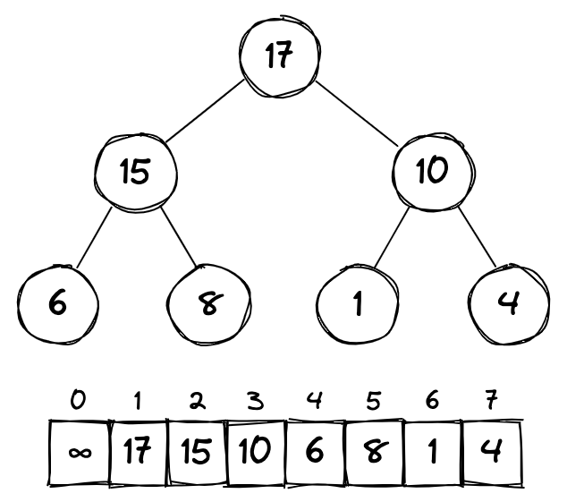
fig. 23 - Max Heap
The process of "sorting" an unordered array to follow heap's rules is usually referred to as "building" the heap. It's a recursive process that starts from the bottom of the tree (\(h=0\)) and works its way to the top. For every subtree iteration, the root value is compared to its children values and bubbled down if needed.
C++ implementation of Min and Max Heap
| N. of nodes = \(n\) Height = \(h\) |
Time complexity | Why? |
|---|---|---|
| Search | \(O(n)\) | Searching a non-root element might require searching through every node in the heap. |
| Insert | \(O(h) \approx O(\log(n))\) | First, the node is appended to the end of the array. Then, it is bubbled up by comparing it to its parent node until heap's properties are restored. |
| Delete | \(O(h) \approx O(\log(n))\) | First, the node is swapped with the last element of the heap, then removed. Then, the swapped node is bubbled up or sifted down to restore heap properties. |
3.8. Hash Table
A Hash Table is a key-value pair based data structure which uses hash functions that return an integer \(i\) which is then used to store the data in an array at index \(i\). Hash functions work by doing operations on the key value which are not reversible (i.e. impossible to derive the key from the hash).
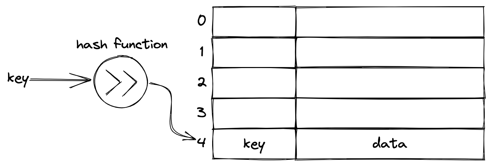
fig. 24 - Hash table
Sometimes, the hash function generates an index that is already occupied by another key-value pair. That is called collision, and there's various ways to address the issue:
The time complexity in the table below refers to a hash table that uses chaining to deal with collisions.
| Input size = \(n\) | Time complexity | Why? |
|---|---|---|
| Search | \(O(1)\) | Searching for a key value pair is done by hashing the key and then accessing the index generated by the function. |
| Insert | \(O(1)\) | Inserting only involves hashing the key and inserting the pair at the index returned by the hash function. |
| Delete | \(O(1)\) | Deleting works by first finding the index of the pair by hashing the key and then setting the array location to null. |
4. Analysis of Algorithms
Many aspects of our digital lives are controlled by algorithms – from the search function of a music streaming service to a navigation app that guides us to our destination.
Because there's so many possible applications for algorithms in everyday life, various design techniques distinguish the multitude of algorithms ever created:
4.1. Master Theorem
Lastly, before diving into Algorithm Analysis, it is worth mentioning that many divide and conquer algorithm's time complexity can be calculated using the Master Theorem. It is a formula that helps solving recurrence relations of the form:
Where \(T(n)\) is the time complexity of the algorithm, \(a\) is the number of sub-problems, \(T(\frac{n}{b})\) is the runtime of each initial subproblem and \(f(n)\) is the time complexity of the algorithm's work done outside of the recursive calls.
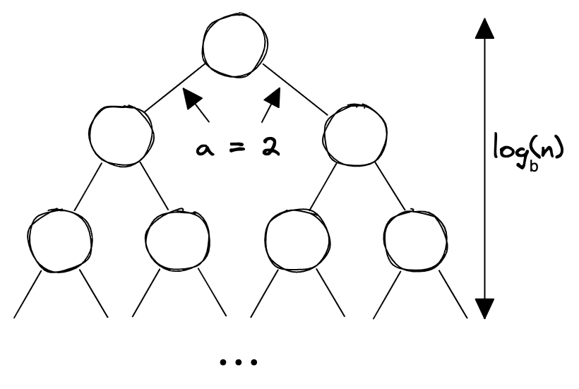
fig. 25 - Master theorem tree
At depth \(d\), a complete tree has \(a^d\) nodes and the maximum depth of a recursion tree is \(\log_b(n)\).
That means that to find out how many leaves the tree has we can calculate \(a^{\log_b(n)}\) which, for logarithms properties equals to \(n^{\log_b(a)}\).
A running time of \(\Theta(n^{\log_b a})\) follows.
Since in the master theorem – \(T(n) = aT(\frac{n}{b}) + f(n)\) – we're adding \(f(n)\) to the recursive calls complexity, the next step is comparing the two values and finding out which one dominates. There is three cases:
4.2. Search Algorithms
Search algorithms are algorithms that try to find a specific element in a data structure. There are many different types of search algorithms, each with their own advantages and disadvantages.
4.2.1. Linear Search
Linear search is a very simple search algorithm that works by iterating through the data structure and comparing each element with the element we're looking for. If the element is found, the algorithm returns the index of the element. If the element is not found, the algorithm returns -1.
Linear search is a brute force algorithm, which means that it tries every possible combination and stops executing when it finds a solution.
Analysis of Linear Search
| Input size = \(n\) | Time complexity | Why? |
|---|---|---|
| Worst case | \(O(n)\) | The worst case in linear search happens when the element is either at the last index or not present in the array. |
| Average case | \(\Theta(n)\) | The average case would be finding the element at index \(\frac{n}{2}\), so the average case still depends on the input size. |
| Best case | \(\Omega(1)\) | The best case happens when the element is found at the first index of the array. |
4.2.2. Jump Search
Jump search is a search algorithm for sorted arrays. It works by jumping a fixed number of steps at a time, and then doing a linear search on the elements in that block – in case the jump finds an element greater than the searched element. If the element is found, the algorithm returns the index of the element. If the element is not found, the algorithm returns -1.
Jump search is a divide and conquer algorithm, which means that it divides the problem in smaller sub-problems to solve those instead. In this case, the sub-problems are the blocks of the array.
The optimal step size is \(s=\sqrt{n}\), since in the worst case \(\frac{n}{s}\) steps are made, with the addition of \(s-1\) steps for the linear search. \(\sqrt{n}\) provides the minimum amount of steps for \(\frac{n}{s} + (m - 1)\).
Analysis of Jump Search
| Input size = \(n\) | Time complexity | Why? |
|---|---|---|
| Worst case | \(O(\sqrt{n})\) | The worst case in jump search happens when the element we're looking for is either at the second to last index, or non existent. |
| Average case | \(\Theta(\sqrt{n})\) | The average case still depends on the step size. |
| Best case | \(\Omega(1)\) | The best case happens when the element is found after the first jump. |
4.2.3. Binary Search
Binary search is a search algorithm for sorted arrays. It works by dividing the array in half and checking if the element we're looking for is greater or lesser than the current element. The algorithms then proceeds to only look in one half of the array, dividing that in two again and so on. If the element is found, the algorithm returns the index of the element. If the element is not found, the algorithm returns -1.
Binary search is a divide and conquer algorithm, which means that it divides the problem in smaller sub-problems to solve those instead. In this case, the sub-problems are the halves of the array.
To calculate the complexity of the recursive implementation of the binary search algorithm, we can make use of the Master Theorem. We just need to plug these values in it:
C++ implementation of Binary Search
We have to find out which case of the theorem we're looking at. To do so, we must compare \(n^{\log_b(a)}\) to \(O(1)\).
Since \(f(n)\) and \(n^{\log_b(a)}\) are asymptotically equal, we're looking at case 2 of the Master Theorem, that states that for binary search:
| Input size = \(n\) | Time complexity | Why? |
|---|---|---|
| Worst case | \(O(\log{n})\) | The worst case in binary search is either when we find the desired element after reducing the search space to that single element or when the element doesn't exist. |
| Average case | \(\Theta(\log{n})\) | The average case is finding the element after \(\frac{\log(n)}{2}\) steps. |
| Best case | \(\Omega(1)\) | The best case is when the element is found in the middle of the array. |
4.3. Sorting Algorithms
Sorting algorithms are algorithms that take an array of elements and rearrange them in a specific order. The order can be ascending or descending, depending on the algorithm.
4.3.1. Selection Sort
Selection sort is a sorting algorithm that works by finding the smallest element in the array and swapping it with the first element. Then, it finds the second smallest element and swaps it with the second element. It continues doing this until the array is sorted.
Selection sort is an algorithm that is easy to implement, but it has a very bad time complexity.
Analysis of Selection Sort
As we can see, the time complexity of selection sort is \(O(n^2)\). This is because the inner for loop has to iterate first \(n\) times, then \(n - 1\) times \(...1\). That is called an arithmetic series, and can be calculated as follows:
| Input size = \(n\) | Time complexity | Why? |
|---|---|---|
| Worst case | \(O(n^2)\) | The case doesn't matter. Selection Sort always runs with the same time complexity. |
| Average case | \(\Theta(n^2)\) | The case doesn't matter. Selection Sort always runs with the same time complexity. |
| Best case | \(\Omega(n^2)\) | The case doesn't matter. Selection Sort always runs with the same time complexity. |
4.3.2. Bubble Sort
Bubble sort is a sorting algorithm that works by comparing two adjacent elements and swapping them if they're not in the correct order. It continues doing this until the array is sorted.
Analysis of Selection Sort
Again, as with Selection Sort, we have an arithmetic series.
| Input size = \(n\) | Time complexity | Why? |
|---|---|---|
| Worst case | \(O(n^2)\) | The worst case is when the array is sorted in reverse order. |
| Average case | \(\Theta(n^2)\) | The average case is when the array is randomly sorted. |
| Best case | \(\Omega(n)\) | The best case is when the array is already sorted. The algorithm will go through the array once and since no swaps happen, quit the function. |
4.3.3. Quick Sort
Quick sort is a sorting algorithm that works by choosing a pivot element and partitioning the array around it. The elements that are smaller than the pivot are placed to the left of it, and the elements that are larger than the pivot are placed to the right of it. Then, the algorithm recursively sorts the left and right subarrays.
To calculate the complexity of the recursive implementation of the quick sort algorithm, we can make use of the Master Theorem. We just need to plug these values in it:
C++ implementation of Quick Sort
We have to find out which case of the theorem we're looking at. To do so, we must compare \(n^{\log_b(a)}\) to \(O(n)\).
Since \(f(n)\) and \(n^{\log_b(a)}\) are asymptotically equal, we're looking at case 2 of the Master Theorem, that states that for quick sort:
| Input size = \(n\) | Time complexity | Why? |
|---|---|---|
| Worst case | \(O(n^2)\) | If the pivot is chosen non randomly (either start or end of array) some input can force \(n^2\) complexity. |
| Average case | \(\Theta(n\log(n))\) | The average case is the same as the best case. |
| Best case | \(\Omega(n\log(n))\) | The average case is when the pivot is chosen so that it splits the array in half. |
4.3.4. Merge Sort
Merge sort is a sorting algorithm that works by dividing the array into two halves, sorting each half, and then merging the two halves together.
It works by recursively splitting the array in smaller and smaller parts until the subarrays are of length 1, to then merge them again after sorting them.
To calculate the complexity of the recursive implementation of the merge sort algorithm, we can make use of the Master Theorem. We just need to plug these values in it:
C++ implementation of Quick Sort
We have to find out which case of the theorem we're looking at. To do so, we must compare \(n^{\log_b(a)}\) to \(O(n)\).
Since \(f(n)\) and \(n^{\log_b(a)}\) are asymptotically equal, we're looking at case 2 of the Master Theorem, exactly like Quick Sort:
| Input size = \(n\) | Time complexity | Why? |
|---|---|---|
| Worst case | \(O(n\log(n))\) | The case doesn't matter. Merge Sort always runs with the same time complexity. |
| Average case | \(\Theta(n\log(n))\) | The case doesn't matter. Merge Sort always runs with the same time complexity. |
| Best case | \(\Omega(n\log(n))\) | The case doesn't matter. Merge Sort always runs with the same time complexity. |
4.4. Complex Algorithms
Until now, we analyzed common algorithms. In general, sorting and searching arrays is often considered trivial. We're now going to go over some more complex algorithms. Some of these have more concrete applications in real life.
4.4.1. Rat in a maze algorithm
The rat in a maze algorithm is a backtracking algorithm that solves the following problem:
Given a maze, represented by a 2D array, find a path from the top left corner to the bottom right corner. The maze is surrounded by walls, and the rat can move in all four directions – up, down, left and right.
The algorithm works by recursively trying to move the rat in all directions. If the rat can't move in any direction, it backtracks and tries another path.
This algorithms is a good example of a backtracking algorithm.
In this implementation of the algorithm, the matrix that holds the maze has the same width and height, so the total number of cells in the maze is \(n^2\). For every cell, there is four possibilities of movement – also called unvisited neighbours.
Since the algorithm tries every possible path, the time complexity is \(O(4^{n^2})\).
C++ implementation of the Rat in a Maze algorithm
| Input size = \(n^2\) | Time complexity | Why? |
|---|---|---|
| Worst case | \(O(4^{n^2})\) | In the worst case, the rat has to traverse every single cell and check its four neighbours once. |
| Average case | \(\Theta(4^{n^2})\) | The average case is the same as the worst case. |
| Best case | \(\Omega(4^{n^2})\) | The best case is the same as the worst case. |
4.4.2. Dijkstra's Algorithm
Dijkstra's Algorithm is one of the most famous algorithm ever invented. It takes its name from its inventor, computer scientist Edsger Wybe Dijkstra. The algorithm is used to find the shortest path between two vertices in a weighted graph. It requires the weights on every edge to be positive to work.
The algorithm works by maintaining a set of vertices that have been visited, and a set of vertices that haven't been visited. The algorithm starts by adding the source vertex to the set of visited vertices, and all other vertices to the set of unvisited vertices. Then, the algorithm iterates over the unvisited vertices, and finds the vertex with the smallest distance from the source vertex. The algorithm then adds this vertex to the set of visited vertices, and removes it from the set of unvisited vertices. The algorithm then updates the distances of all unvisited vertices that are adjacent to the newly visited vertex. The algorithm repeats this process until all vertices have been visited.
The algorithm is a good example of a greedy algorithm. It always chooses the vertex with the smallest distance from the source vertex. This is a good heuristic, but it doesn't always lead to the optimal solution.
C++ implementation of Dijkstra's Algorithm - From geeksforgeeks.org.
Dijkstra's algorithm has many steps, so to measure its time complexity we have to take them all into account:
Since the algorithm iterates over all vertices, the time complexity is \(O(|V|\log(|V|) + |E|)\). This is the same as \(O(|E|\log(|V|))\).
4.4.3. A* Algorithm
The A* algorithm is a pathfinding algorithm that is used to find the shortest path between two vertices in a weighted graph. It is a variant of Dijkstra's algorithm, and it is often used in games. The algorithm works by maintaining a set of vertices that have been visited, and a set of vertices that haven't been visited. The algorithm starts by adding the source vertex to the set of visited vertices, and all other vertices to the set of unvisited vertices. Then, the algorithm iterates over the unvisited vertices, and finds the vertex with the smallest distance from the source vertex. The algorithm then adds this vertex to the set of visited vertices, and removes it from the set of unvisited vertices. The algorithm then updates the distances of all unvisited vertices that are adjacent to the newly visited vertex. The algorithm repeats this process until all vertices have been visited.
C++ implementation of A* Algorithm - From geeksforgeeks.org.
Instead of just choosing the shortest distance from the source vertex, the A* algorithm also takes into account the distance from the destination vertex. This is done by adding the distance from the source vertex to the destination vertex to the distance from the source vertex to the current vertex.
This extremely efficient heuristic function allows the A* algorithm to often have best case scenarios of \(\Omega(e)\) where \(e\) is the number of edges between the start and the destination vertex. The worst case scenario has still a better complexity than Dijkstra, with \(O(|V|+|E|)\).